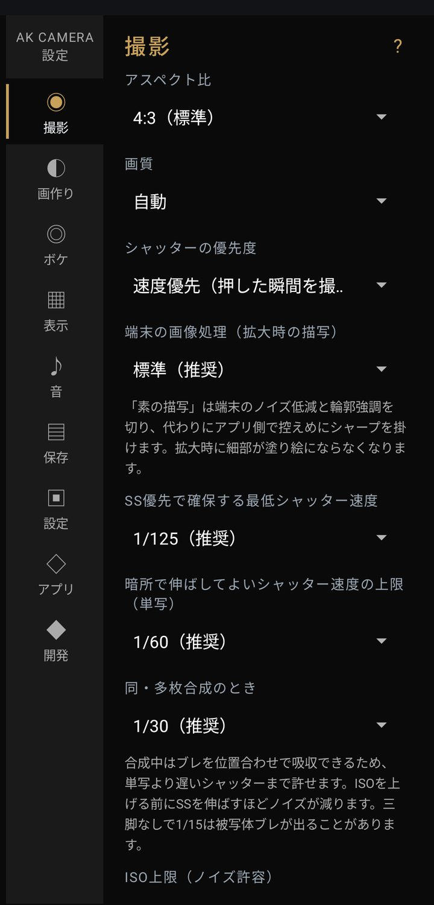

設定：撮影

記録する写真の大きさ、ピント、明るさの決まりごと。
写真の形と画質
- アスペクト比初期値 4:3
- 写真の縦横の比率です。 4:3（標準） / 16:9 / 1:1（スクエア） / シネスコ 2.39:1 / X 1枚投稿（16:9） / X 2〜3枚投稿（8:9） / X 4枚投稿（16:9） X の項目は、X（旧Twitter）に載せる枚数に合わせた比率です。透かしを「写真の下に帯を足す」形で入れると、選んだ比率より縦長になります（保存）。
- 画質初期値 自動
- 画素数と JPEG の品質です。数字が大きいほど細かく残り、ファイルも大きくなります。 自動 / 低（3MP・70%） / 標準（8MP・85%） / 高（12MP・92%） / 特高（12MP・95%） / 最高（12MP・100%） / 最大解像度（実験的・処理が重い） 迷ったら「自動」のままで大丈夫です。
- 画質：最大解像度（実験的）
- センサーが持つ最大の画素数で撮ります。Android 12 以上で、端末とレンズが対応しているときだけ使えます（Android 11 では選択肢に出ません）。
処理が重いぶん、次の制限があります。
- 露出は端末にまかせます。M（マニュアル）や「合焦したときだけ撮る」を選んでいると、その1枚は通常の画質で撮ります（画面にそう出ます）
- 暗いときに自動で重ねる合成は働きません
- ピーキングと RAW(DNG) は使えません。フラッシュも方式によっては OFF に戻ります
- 対応していないレンズに切り替えたときは、通常の画質で撮ります
- シャッターの優先度初期値 速度優先
- 押した瞬間と写る瞬間のずれをどう扱うかです。 速度優先（押した瞬間を撮る・推奨） / 低遅延 / 画質優先（多枚合成・ラグあり） 速度優先に対応していない端末では、自動で「低遅延」になります。 一部の端末では速度優先のときに写真全体が緑になることがあり、アプリが見つけると撮り直します。何度も続くときは「低遅延」にしてください。
- 端末の画像処理（拡大時の描写）初期値 標準
- 端末がかけるノイズ低減と輪郭強調の強さです。 素の描写（ノイズ増・上級者） / 標準（推奨） / なめらか 素の描写は端末の処理を切って、アプリ側で控えめにシャープを掛けます。拡大したときに細部が塗り絵のようになりにくい代わりに、ざらつきは増えます。 なめらかは端末の処理を丁寧なほうで掛けます。
露出（明るさの決め方）
- 露出モード初期値 S
- A（おまかせ・推奨） / S（シャッター速度優先） / M（マニュアル） / P（おまかせ・ISO上限が効く） それぞれの意味は 05 を見てください。端末が手動の露出に対応していないときは A で動きます。
- 露出補正初期値 ±0.0
- −3.0〜+3.0 EV。撮影画面の露出補正と同じ値です。
- M：シャッター速度 / M：ISO / M：フォーカス
- M を選んだときに使う値です（初期値は 1/125・ISO 100・AF）。端末が対応していない範囲は、撮影画面へ戻ったときに端末の範囲へ収めます。
- 逆光・暗い被写体を自動で持ち上げる初期値 ON
- 露出が A のときだけ効きます。画面の中央とピント位置を重く見て、主役が背景より暗いときに明るさを補います（最大 +1.3段）。白飛びが広いときは逆に抑えます。OFF にすると端末まかせに戻ります。
暗くなったときの順番（P と S のとき）
暗くなるにつれて、まずシャッター速度を「最低シャッター速度」に置いたまま ISO を「低ノイズ優先ISO」まで上げます。 次にシャッター速度を「上限」まで遅くして粘り、それでも足りなければ ISO を「ISO上限」まで上げます。 下の4つはこの順番の区切りを決める項目で、A（おまかせ）のときは効きません。
- SS優先で確保する最低シャッター速度初期値 1/125
- 1/60 / 1/125（推奨） / 1/250 / 1/500 / 1/1000 速くするほどブレに強くなり、そのぶん ISO が上がってざらつきやすくなります。子どもやペットなら 1/250〜1/500 が目安です。
- 暗所で伸ばしてよいシャッター速度の上限（単写）初期値 1/60
- 1/125（ブレに最も強い） / 1/60（推奨） / 1/30 / 1/15（三脚向け） 合成しないときに、どこまで遅くしてよいか。遅くするほどざらつきは減り、手ブレや被写体ブレは出やすくなります。
- 同・多枚合成のとき初期値 1/30
- 1/125 / 1/60 / 1/30（推奨） / 1/15（暗所に最も強い・三脚向け） 合成するときは位置合わせでブレを吸収できるので、単写より遅くまで許せます。三脚なしの 1/15 は、動くものがブレることがあります。
- ISO上限（ノイズ許容）初期値 ISO 3200
- ISO 400 / 800 / 1600 / 3200（推奨） / 6400 / 制限しない 下げるとざらつきは減りますが、とても暗い場面では写真も暗くなります。
- 低ノイズ優先ISO初期値 ISO 400
- ISO 100 / 200 / 400（推奨） / 800 / 1600 ここを超える前に、シャッター速度を遅くして粘ります。
ピント
- AF動作初期値 AFC
- AFC（動きものに追従・推奨） / AFS（合焦したら固定） 動くものは AFC。止まっているものをじっくり撮るなら AFS でも。
- AFエリアの大きさ初期値 1点
- 1点（スポット） / 小さめの枠 / 少し大きめの枠 / もう少し大きめの枠 タップした場所のどれくらいの範囲でピントを探すか。小さいものを狙うなら1点、模様の少ないものは枠を大きくすると合いやすくなります。
- AFが合わないときの撮影初期値 合焦を待たずに撮る
- 合焦を待たずに撮る（従来どおり・推奨） / 合焦したときだけ撮る 「合焦したときだけ撮る」にすると、ピントが決まらなかった回は撮影を中止します。無地の壁や暗すぎる被写体では、待たずに撮るほうが使いやすいです。
- 撮影後にAFロックを解除するまで初期値 3秒
- 解除しない（ロックしたまま） / 1秒 / 2秒 / 3秒 / 5秒 / 10秒 / 30秒 同じ場所で何枚も撮るなら長めに。
合成・HDR・フラッシュ・そのほか
- 多枚合成スタック初期値 自動
- 自動（暗いときだけ・推奨） / 使わない / 常に ×4 / 常に ×8 撮影補助の「合成」と同じ値です。枚数が多いほどざらつきは減り、保存までの時間は長くなります。
- HDR初期値 OFF
- 撮影補助の HDR と同じ値です。
- セルフタイマー初期値 OFF
- OFF / 3秒 / 5秒 / 10秒。
- フラッシュ初期値 OFF
- OFF / 自動 / 強制発光 / 弱フィル / 常時点灯 端末・前面カメラ・最大解像度で使えない方式は、撮影画面へ戻ったときに OFF へ戻ります。
- 弱フィルの光量初期値 最小
- 最小 / 25% / 50% / 75% / 最大 フラッシュを「弱」にしたときの明るさ。光量の調整に対応していない端末では、最小のまま点きます。
- 音量ボタン初期値 使わない
- 使わない（音量を変える） / シャッター（動画では録画の開始と停止） / ズーム（↑で寄る・↓で引く）
- 使用レンズの戻し先
- 「既定の背面へ戻す」を選ぶと、いつもの背面カメラに戻ります。ほかのレンズへは撮影画面のレンズボタンから切り替えます。
- 手ブレ補正（OIS／動画EIS）初期値 ON
- 端末の手ブレ補正を使います。三脚に固定するとき以外は ON のままで。
- ナイトモード（実験的）初期値 OFF
- 端末が持つ夜景用の撮り方を使います。対応している端末だけで、切り替えは次にカメラを起動したときに効きます。 動くものは水彩画のようににじむので、葉や草の細かさを残したいときは OFF のままにしてください。